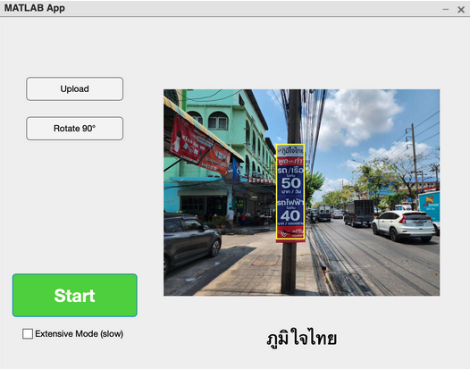
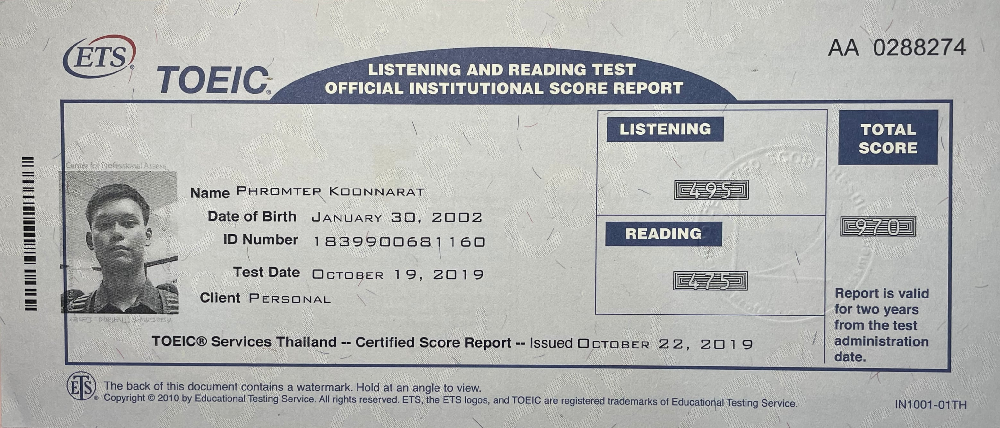

Home
Phromtepislookingforajob
I am a freshly graduated student with second class honor from Chulalongkorn University, with foundation in software engineering, development, cloud services, networking, and infrastructure. I am looking for an entry-level career in Cloud-based engineering and DevOps field to learn and grow my skills.
education
Chulalongkorn University, Bangkok [2020-2024]
Bachelor of Science (B.Sc.) in Computer Science
GPAX 3.32
Courses Taken
- Mobile Computing
- Software Engineering and Methodology
- Hands On Cloud Architecture
- Hands On Machine Learning
Activities
- member of Google Developer Student Club (GDSC)
Phuketwittayalai School, Phuket [2017-2020]
Science, Mathematics, and Computer Program
GPAX 3.60
Projects
RCU Marketplace
A mobile web application integrated within Line OA for food delivery service for Chulalongkorn University dormitory students.
Tools
- Node.js
- React.js
- LINE Front-end Framework (LIFF)
- AWS Amplify
- Google Firestore
More Info
What I Learned
- Designing project workflow as a team leader.
- Designing and coding core components for the system, including integration with various APIs.
- Implementing the automated deployment pipeline using Github Actions.
Features
- User can launch the webapp and be authenticated automatically from Line Official Account
- User can provide services by creating a listing that other users can see
- User can browse current active services and filter by tags
- User can have live message with the service provider
- User can place an order on desired service
View on Github
Pani Puri Music
A convolutional neural network classifier model to predict song genre using Mel Frequency Cepstrum spectogram, with front-end web application for user.
Tools
- Python
- Node.js + Next.js
- Tensorflow
- Spotify Web API
More Info

What I Learned
- Data engineering methodologies, involving gathering data, as well as analyzing, cleaning, and processing data to be used with the CNN model.
- Designing and coding the web application that runs the model to accept user's audio and generates predictions.
Applying image enhancement methods with 3D convolutional neural network for COVID-19 detection
A study on image enhancement methods to improve the efficiency of CNN models in detecting COVID-19 involvement in 3D CT scans of the lungs. The study involves analysing experimenting on existing image enhancement methods and introducing an improved enhancement method.
Tools
- Python
- Google Cloud Platform
- Tensorflow
- Linux, Bash
More Info
What I Learned
- Extensive researches on image processing and CNN.
- Designing and building CNN models.
- Extensively experimenting on image enhancement techniques.
- Using cloud computing for model training workloads, implementing monitoring and automations to enhance training process.
Political campaign poster detection
A computer vision project to detect roadside political campaign posters from street images and classify the posters using image processing methods, developed fully in MATLAB with simple GUI.
Tools
- MathWorks Matlab
More Info

What I Learned
- Experimenting on computer vision and image processing methodologies.
- Coding with MathWorks MATLAB
Todo list app
Yet another responsive and function-rich todo list app written in JavaScript using React.js (for web-app) and React Native (for mobile app). Backend API is written in C# (.NET) with MySQL for database
Tools
- JavaScript
- React.js
- React Native
- C# (.NET)
- MySQL
More Info
What I Learned
- Designing and developing animated responsive front-end pages with focuses on UX using JavaScript, HTML, and CSS.
Features
- Responsive UI with quality-of-life components such as date-time picker
- User can login to view their to-do lists
- User can add, edit, mark as done, or remove any to-do records
View on Github
Skills
Programming Languages I write in
- Python => Preferred
- JavaScript => Preferred
- C# (.NET)
- Java
- Dart (Flutter)
Tools/Frameworks I use
- Linux
- Node.js + React.js
- Docker
- Git + Github
- Amazon Web Services
- Google Cloud Platform
Courses I've taken
- Software Engineering and Methodology
- Hands on Cloud Architecture
- Hands on Machine Learning
- Data Mining and Data Warehouse
- UX/UI Design
- Google Cloud Foundation Course Visit Profile
- Cloud Computing Fundamentals
- Infrastructure in Google Cloud
- Networking and Security in Google Cloud
- UMIch Intro to Data Science Certification
Achievements
-
AWS Certified Solutions Architect Associate SAA-C03
Taken in June 2024, View on Credly
-
TOEIC
Scored 970 out of 990. Taken in October 2019.  - OBEC Hackathon "Apps for Thailand 4.0"
Participated in 2019, More Info
Nothing much to see in this section tbh. Might as well just hook me an interview so we can understand each other better. - CU on the Road Season 3
Participated in 2020, the show aired on live TV in 2021. More Info
- "Computing Youth Challenge" by College of Computing, PSU
Participated in 2020, Won first place in the competition. More Info
- EP Southern "Website Design"
Participated in 2015, Won second place.
Languages
English
- Proficient, able to communicate in work and business context
- Has taken TOEIC with the score of 970 out of 990
Chinese
- Beginner level, would need some brush up.
Japanese
- Beginner level, currently learning.
Acknowledgement :)
This website is made in markdown (but mostly HTML) using MkDocs with Simple Blog theme.
The website is deployed using GitHub Pages and the SSL certification is provided by CloudFlare.
I made this website in documentation style to provide the detailed version of my resume/CV in simple and straightforward manner. Visit my Linkedin